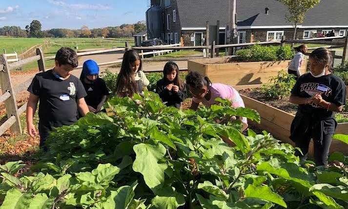

COMMUNITY IN ACTIONLEARN • CONNECT • GROW
Growing better, together.
Join practical activities, share growing knowledge and help create greener neighbourhoods. Every event is an opportunity to learn something useful and grow stronger communities.
Explore Events